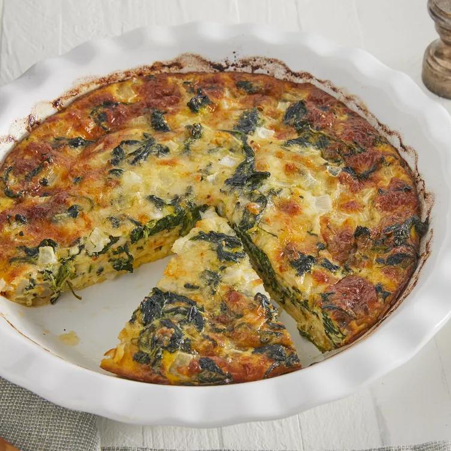

Crustless Spinach Quiche

This crustless quiche made with eggs, spinach, and Muenster cheese is perfect
to serve at any meal. with no heavy crust to make, this light-tasting quiche
is ready in under an hour. Make it your own by adding leftover ham and substituting
Cheddar, feta, or goat cheese for the Muenster. I serve this quick and easy quiche
in the summer for brunch with a side of sausage links and a fresh fruit bowl!
Ingredients
- 1 tablespoon begetable oil
- 1 medium onion, chopped
- 1 (10 ounce) package frozen chopped spinach - thawed, drained, and squeezed dry
- 5 large eggs, beaten
- 1/4 teaspoon salt
- 1/8 teaspoon ground black pepper
- 3 cups shredded Muenster cheese
Directions
- Preheat oven to 350 degrees F (175 degrees C). Lightly grease a 9-inch pie pan.
- Heat oil in a large skillet over medium-high heat. Add onions and cook, stirring
occasionally, unitl soft, about 3 minutes. Stir in spinach and continue to cook
until excess moisture has evaporated.
- Whisk together eggs, salt, and pepper in a large bowl. Add Muenster cheese and
spinach mixture and stir until well blended. Pour into the prepared pan.
- Bake in the preheated oven until eggs have set, about 30 minutes.
- Remove from the oven and let cool for 10 minutes before serving.